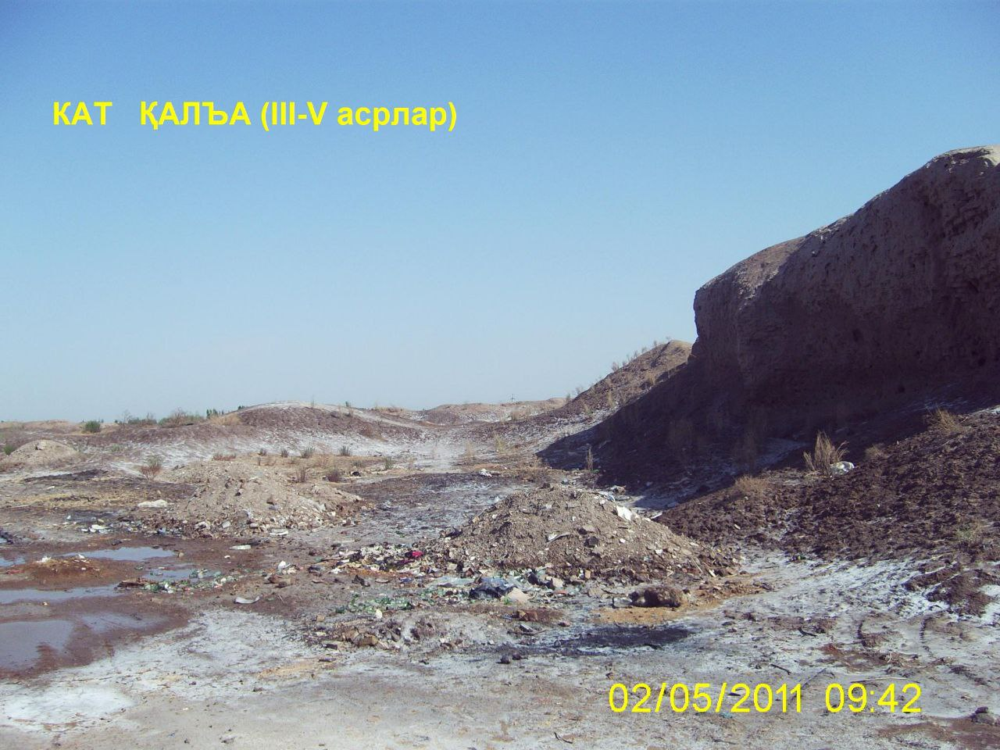

"QIYOT SHAHARCHASI"
1. Me’moriy inshootning nomi:
"QIYOT SHAHARCHASI"
2. Me’moriy inshoot tiklangan yil:
Eramizning III-V asrlar mobaynida tarkib topgan
3. Me’moriy inshoot joylashgan manzil:
Shovot tumani,
Qiyot qishlog‘ida joylashgan.
4. Me’moriy inshootning qurilish materiallari:
Xom g‘isht, paxsa - guvala, qum, yog‘och
5. Inshootning bosh fasadi h.k.lar:
.jpg)

6. Me’moriy inshootning o‘lchamlari
Qal’a to‘g‘riburchak shaklga yaqin, 300-281m, 8,5ga.
7. Me’moriy inshoot to‘g‘risida tarixiy ma’lumot:
Yodgorlikning sharqiy devorida darvoza joylashgan bo‘lib, to‘g‘riburchak shakldagi darvoza oldi murakkab inshoot bilan mustahkamlangan. Qadimda ikki qatorli mudofaa devor bilan o‘rab olingan bo‘lib, saqlanib qolgan balandligi 1,5-7m. Mudofaa devor yarim aylana burjlar bilan mustahkamlangan, ular o‘rtasidagi oraliq hajmi 27m. 1993-1994 yillarda Q.Sobirov rahbarligidagi arxeologik guruh yodgorlikning janubiy-g‘arbiy tomonida qazish ishlarini olib bordi.
Shahar mudofaa tizimining vujudga kelishi va rivojlanishi davrlarini o‘rganish maqsadida devorni kesish ishlari olib borildi. Arxeologik tadqiqotlar natijasida mudofaa devor va burjlarida 3 qurilish davri mavjudligi aniqlandi. Birinchi qurilish davrida devor va burjning pastki qismi paxsadan tiklangan, balandligi 1,5m. Tashqi devor qalinligi 2m, ichki devor qalinligi 1,5m, yo‘lak kengligi 2m. Bu tarixiy davrda mudofaa devor qalinligi 5m. Ikkinchi qurilish davrida paxsa devor ustiga har xil tamg‘alarga ega bo‘lgan to‘rt tomoni teng xom g‘ishtdan devor qurilgan(41x41x10, 42x42x12sm). Uchinchi qurilish davrida tashki va ichki devor qalinligida o‘zgarish bo‘lmaydi, ya’ni 5m. Burjlar devordan yon tomonga 5m bo‘rtib chiqqan. Shaharning qurilishi mil.av. V asrga oid bo‘lib, unda hayot XX asrning 40 yillarigacha davom etgan.
8. Me’moriy inshootning texnik holati:
Yer ustki qism 90% devor konstruksiyalari ekologik va texnogen ta’sirlar natijasida yo‘qolib ketgan
BOSH SAHIFAGA QAYTISH